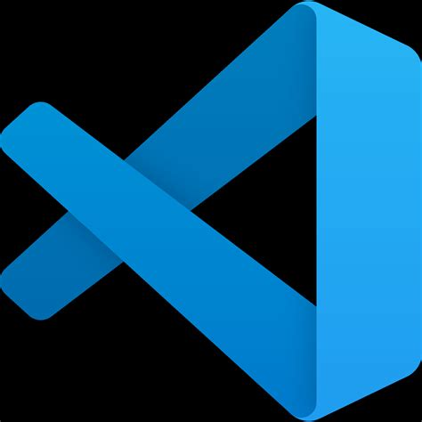
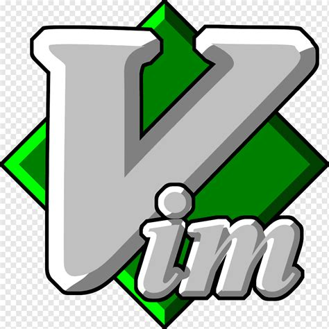
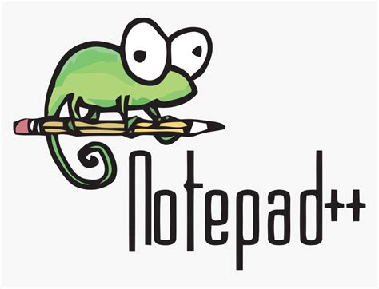

Editores de texto:
Na programação a primeira coisa não é apenas a linguagem que você quer aprender, mas sim o editor de texto
que será o local onde você irá colocar o código.
Visual Studio Code (VScode):

Sem dúvidas o melhor e o mais recomendado para iniciantes, ele é muito fácil de se usar, além de que também foi criado pela
microsoft, muitos programadores o utilizam, principalmente para quem começa na programação você irá ouvir dizer sobre ele
e sabe qual o mais legal disso? Ele é Open-Source.
Vim:

Não é muito recomendado para iniciantes, mas se caso você quiser ter a experiência de poder mexer em algo que pode ser
configurado e eficiente como o Vim fique a vontade, já que ele também é open-source e é muito usado por programadores
e administradores de sistemas especialmente em ambientes Linux e Unix.
Notepad++:

Se você achava divertido programar no bloco de notas do windows, experimente esse aqui que é voltado para
programadores e é mais eficiente que o bloco de notas clássico que conhecemos.